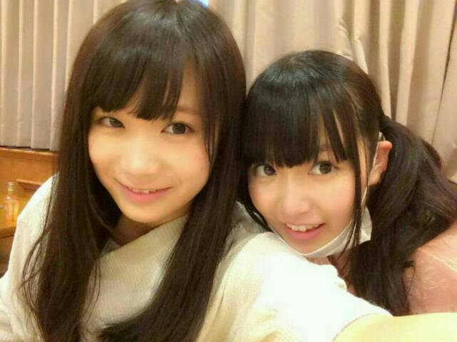
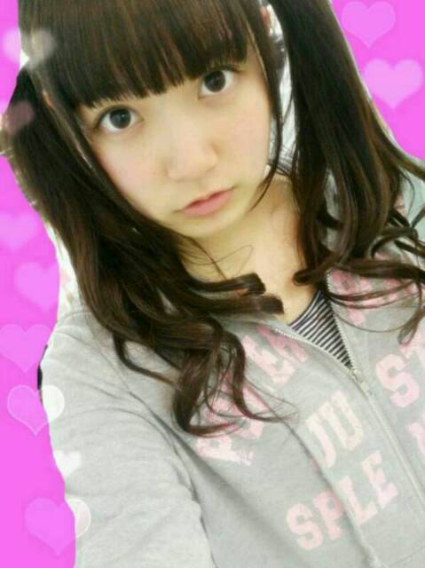

| 2014/05 02 Fri | ひめたん-OoO-その440 |
まなっさんひめっさん

明日はアンダーライブ！
来てくださる方
よろしくお願いします＼(^o^)／
追加募集したら
おかげさまで満員になったみたいで
うんうんよかったよかった！
どんな感じになるかは
やってみないとわかんないけど
リハやってみて結構いい感じよー
明日は3回やるけど
3回ともちょっとずつ違う曲もやるので
お楽しみとゆーことで
きゅんきゅん王国のみなさんには
どの回も楽しめるんじゃないかなーと
思うんだけどねー
あしたお留守番ちーむのみなさんは
日記で報告するから待っててね◎
あっそうそう
前回のね記事にね
たくさんのあたたかいコメントいただいて
ほんとにありがとう(´；ω；｀)
うたうのは好きなのにね、なんでだろうねー
でも、私たちのために
ステージを用意してくださって
みなさんが予定を空けて
楽しみに来てくださるんだから
そして何よりライブが好きだから
明日のライブでも
自分なりに一生懸命歌うので
応援しててください＊
はいーそしてそして
5月5日は握手会です！こどもの日！
え！もう5月だってね！
ほんとになんなのー
ひめたんは信じないよ信じないんだから......
なんて言いつつ
5/8 週刊ヤングジャンプ
5/9 BOMB
発売ですよー
さりげなく告知しておきますよー
よろしくね(＊^^＊)んふふ

ジャージひめ！

 俺とラザニアどっちが美味しいと思う？
俺とラザニアどっちが美味しいと思う？
ひめたんにはわからんけど
ラザニアはすきじゃないんだよねー
悪魔のリドルで好きなキャラいる
他のアニメでも好きなキャラがいたら教えてー
晴ちゃんすきだよ(＊^^＊)
今期だったら
犬神さんと猫山さんの猫山さん
僕らはみんな河合荘の宇佐くん
ノーゲーム・ノーライフの「 」兄妹
とかすきー♪
フィールド(陸上)ホッケーって
スポーツを知っていますか？
はじめて聞いたー
えーどんなやつ？アイスの陸上版てこと？
ググってくるわー！
この前まいやんが黒石さんになってましたが、
ひめたんが黒元さんになるのはどんな時ですか？
俗に言うブラックひめたんってやつですね
うーんーいつなんだろうね？
ってか何そんな瞬間あるの
ひめたんにはよくわかんないや(゜゜)
ひめたんは何も見ずに
乃木坂１期生２期生のメンバー言える？
言えますよー！
名前呼ぼうとしてホームページの画面とか
いちいち出せないじゃんよー
2期生ちゃんとも
もう1年は一緒にいるんだからねっ
最近思うんだけど、ひめたん本当に晴れ女？(笑)
今年から雨女になってない？(笑)
ひめたんに会いに行く日は、
寒かったり雨が降ったり、
天候が荒れている日が多いんだ〜。
なってないよ(｀・ω・´)む
あたし誕生日に雨降ったことあんまないよ！
のぎのぎに雨女が絶対いるんだよー
京都の握手会なんて毎回雨だし
武道館も雪降ってたしー......
ひめたんって天真爛漫な感じだけど、
思い出し笑いとかする？
人に見られた時の対処法教えて下さい。
思い出し笑いをする子じゃないんだよねー
ひとりで、例えば電車とかに乗ってる時って
何か思い出にふけるよりも
ぼーっとしてることが多いとゆーか。
ひめたんの日記の
コメント欄下２ケタに46を踏んだ方へ
手書きでコメ返するコーナー
＼ ひめたん46 ／

いつもたくさんのコメント
ありがとうございます
みんならぶ(ヽ´ω`)やよ
僕も私もコメント返ししてよーって方が
たくさんいらっしゃって
嬉しい半分申し訳ない半分......
ほんとはひとりひとりに
お返事したいんだー。
でもね、記事に書かないかもだけど
うんうんそうだよねーとか
いやいやおかしいでしょーとか
ひとりで楽しく読んでるからねー♪
おーっとはやく寝なきゃ。
あした頑張ります！
日芽香
コメント(508)
2014/05/02 23:54